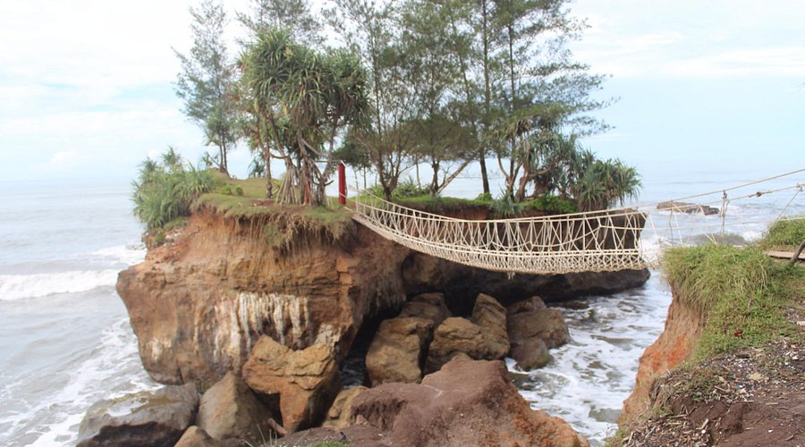
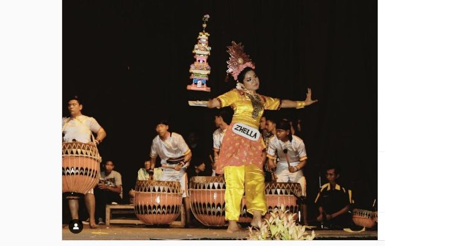
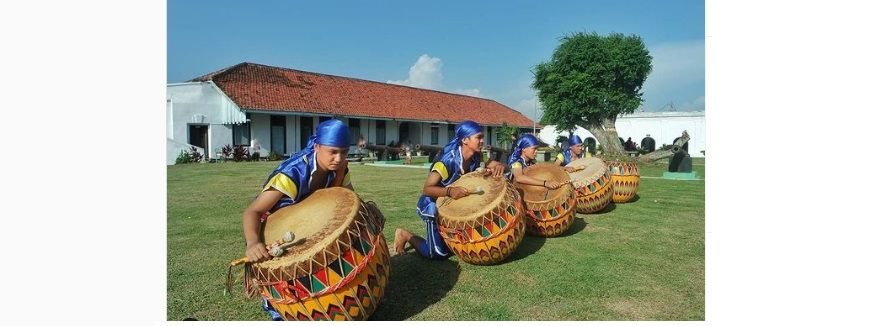

Tentang Bengkulu
Bengkulu adalah provinsi di Indonesia yang terkenal dengan keindahan alamnya. Tempat ini memiliki banyak wisata alam yang memukau.
Bengkulu adalah sebuah provinsi yang berada di Pulau Sumatera, Indonesia dengan ibu kota di Kota Bengkulu. Pada pertengahan tahun
2024, jumlah penduduk provinsi ini sebanyak 2.115.024 jiwa, dengan kepadatan 105 jiwa/km². Provinsi Bengkulu merupakan daerah yang
heterogen dari segi suku bangsa. Penduduknya terdiri dari suku-suku asli dan masyarakat pendatang.
Wisata Alam
Beberapa destinasi wisata alam di Bengkulu yang populer:
Pantai Panjang

Danau Dendam Tak Sudah

Bukit Kaba

Pantai Sungai Suci

Pulau Enggano

Pulau Tikus

Budaya Tradisi
Kain Batik Besurek

Kain besurek bermotif bahasa arab, budaya, dan alam menandakan Akulturasi budaya lokal dan arab. Mulai dikenal sejak tahun 2015. Besurek berasal dari melayu dialek artinya bersurat atau bertulisan dengan maksud tulisan berciri kaligrafi arab gundul. Sebagai bentuk keagungan kepada tuhan, media dakwah islam, serta kecintaan terhadap budaya dan alam.
Tabot

MMerupakan Tradisi Bengkulu dirayakan setiap tahunnya dari tanggal 1 hingga 10 muharam. Untuk memperingati hari kebangkitan islam dan mengenang imam Husein ali bin abu thalib cucu nabi Muhammad SAW. Yang dulunya perna menjadi tawanan oleh tentara Yazid Bin Muawiyah di Padang Karbala, Irak untuk membela islam serta meyampaikan nahi mungkar. Menyampaikan kebenaran bukan hal mudah, Melainkan harus disuarakan jika kebenaran tidak ditegakan maka kebatilan akan berkuasa.
Dol

Merupakan instrument pengiring musik yang digunakan untuk perayaan tabot dan hari besar lainnya. Dol sejenis beduk namun ukurannya lebih kecil, terbuat dari bonggol pohon kelapa yang dilubangi serta dilapisi kulit kerbau atau lembu. Alat pemukulnya dari kayu yang dilapisi kain.